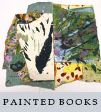
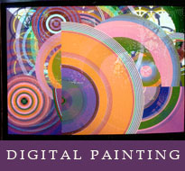
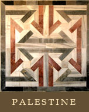
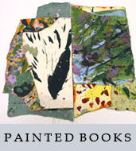
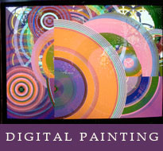
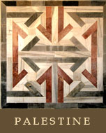

Over five decades of questioning why and what, my mind has developed its paths to places that make painting as delightfully delicious as bread and fruit on an afternoon in sunshine. It takes me to fields of golden wheat, to eating watermelon in the speckled shade of an olive or fig tree, to vistas of the blue sky meeting the blue Mediterranean and coming to my bare toes on the sands of a beach.
Paintingstyle="pointer-events:none;cursor:default;" href="http://www.art.net/ languages, and difficult. I find the solid foundations in the history of pictures. My dialogue is rarely with curators or historians or critics or dealers or other artists. Their interests in the world of art are formed and their guidance is intimately connected to those interests. From the solidity of the past and the common sense of present friends I search for what will be significant to a revolutionary future that I hope will come soon.
My paintings are abstract because I respect most the revolutionary artists of the 20th century. The artists of Cubism, Futurerism, Suprematism, Constructivism, the Mexican muralists, and the Abstract Expressionism are the best of the past century. I want to follow them and continue on the path they began. Programming kinetic painting on computer and producing a video of moving abstractions with sound is a result of taking this path. On the other hand, because of my anger over what the Israeli state does to Palestine and Palestinians, I also do documentary drawing on that subject matter -- the most significant of these is the word-and-picture treatise on the Kafr Qasem Massacre executed on innocent Palestinian villages in 1956.
Please click on the picture above to enter the Memorial to the victims of
the Kafr Kasem massacre of October 29, 1956. See the introductory picture and
then click again. There are fourteen pages of pictures and information and
twelve pages of witness statements. Please be sure to visit the roster of
victims and the artist's statment about methods of documentation, research, and
the making of the documentary drawings.
![[Art on the Net]](/images/artnet_button.gif)